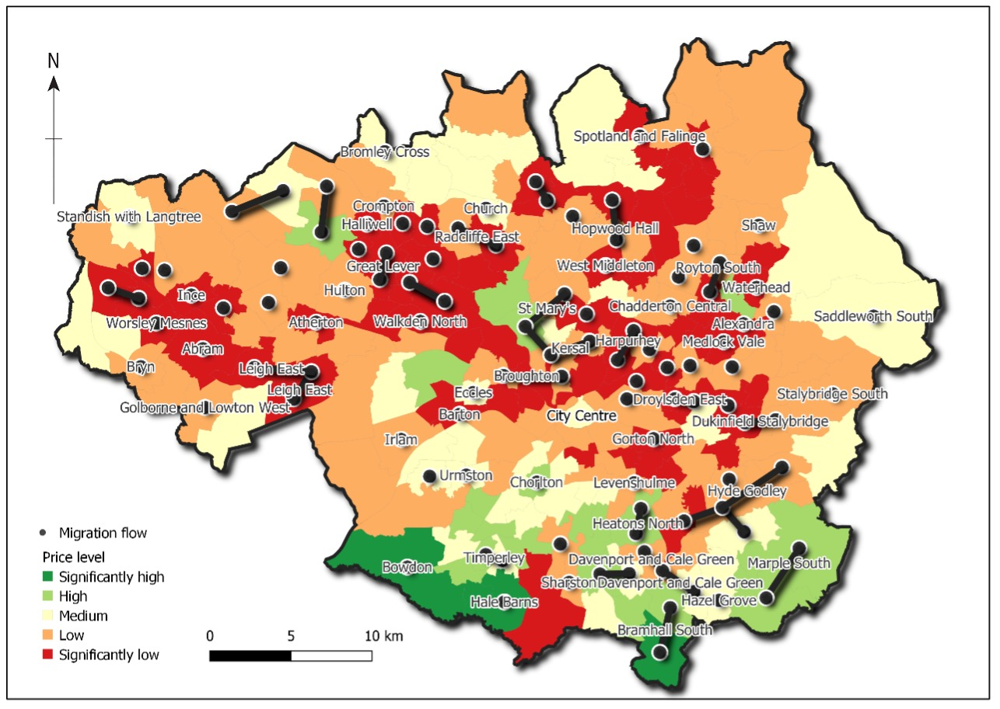
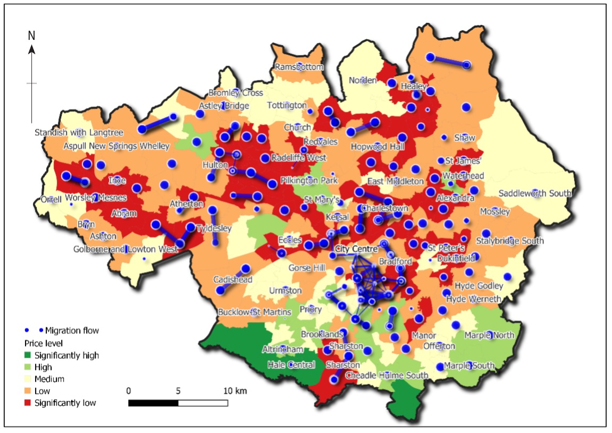
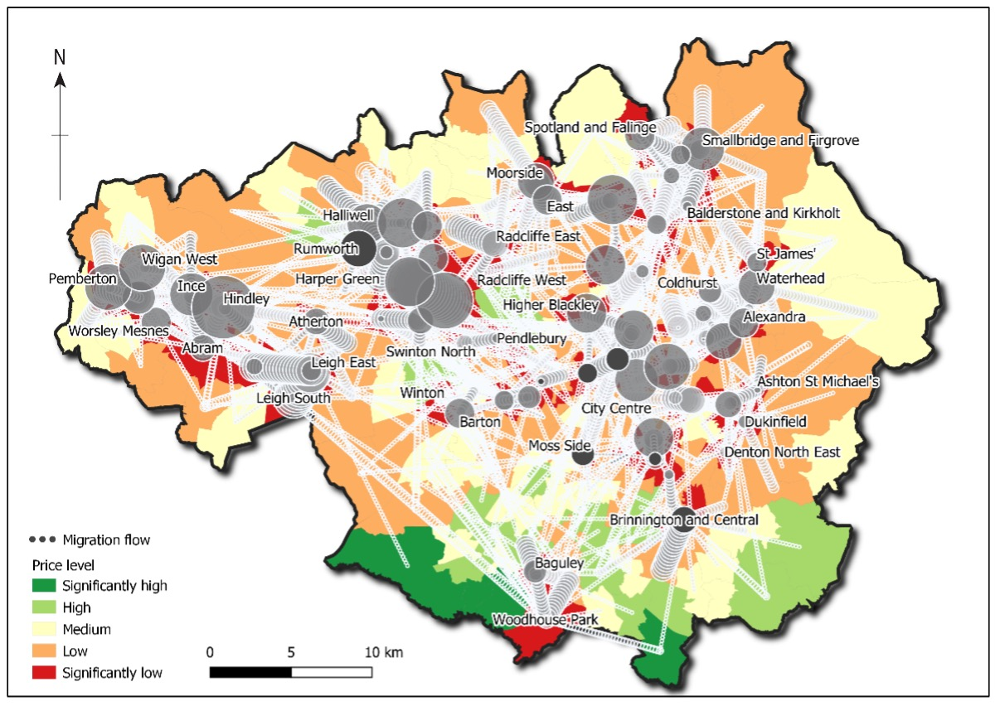
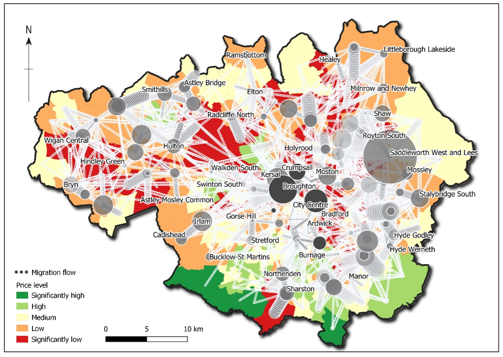
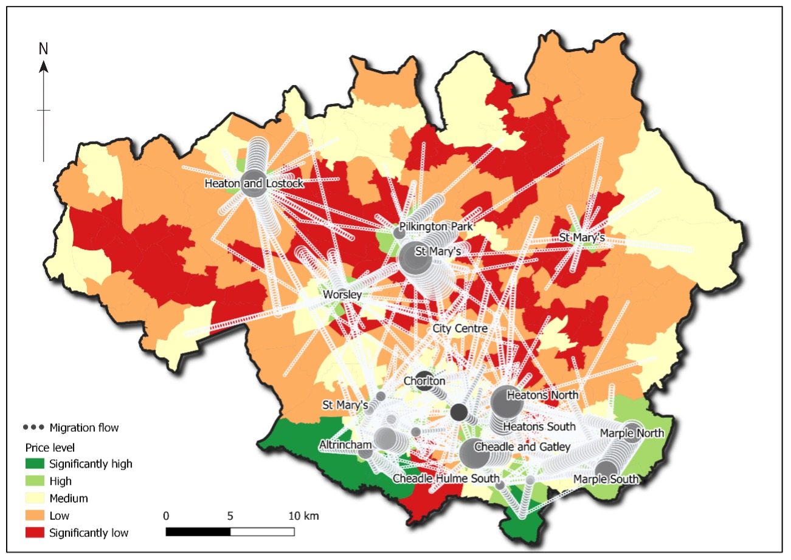

The project aims to demonstrate the usefulness of a GIS approach to explore the spatial connections between migration flow, house price level, age and distance. Based on the 2011 migration flow data and the 2011 house price data in Greater Manchester in the UK, I produced a series of visual maps to show the spatial relationship between migration flow, distance, age and migration areas segmented by house price levels. The results indicated the strong spatial linkages between migration areas based on the consideration of house price ranges either with age groups, distance ranges or previous locations associated with particular house price levels. Policymakers and planners could use this GIS approach to identify specific migration patterns and areas and help them make informed decisions.
Map 1: The patterns of moves from people aged 75 and above

The significant flows came in short distance from high price to lower price areas for example Hyde Godley and Bramhall South and flows between significantly low price areas for example Harpurhey and Great Lever.
Map 2: Spatial relationship between distance levels and price-based areas

It showed the spatial relationship between distance and price-based areas (particularly flows 150 – 1187 persons per flow and distance below 4.17 KM). Significant short distance was dominantly in the areas with significantly low price for example Bradford and Charlestown.
These maps below showed the migration flows coming into areas with significantly high, high, low and significantly low price. The magnitudes of the flows were showed based on the scales of the circles and the colour of the circles. The bigger and the darker the circles the larger the migration flows.
Map 3: Migration flows coming into significantly low price areas

Migration flows coming into significantly low price areas.
Map 4: Migration flows coming into low price areas

Migration flows coming into low price areas.
Map 5: Migration flows coming into high price areas

Migration flows coming into high price areas.
Map 6: Migration flows coming into significantly high price areas
Migration flows coming into significantly high price areas.